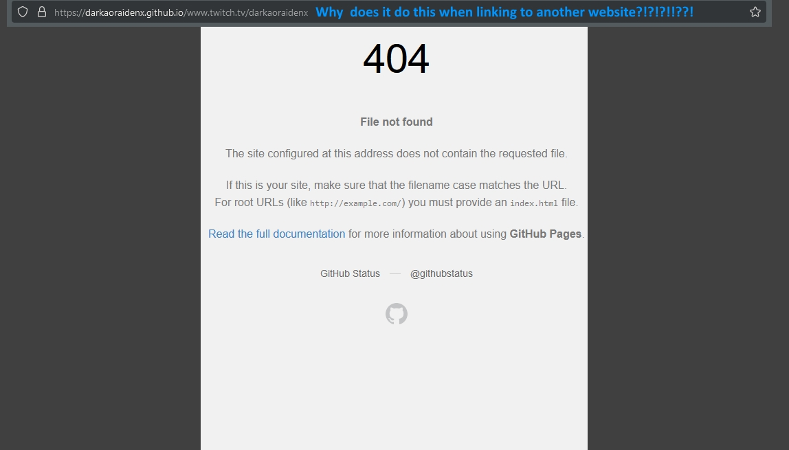

7 Days to Die Mods
https:/www.nexusmods.com/7daystodie/users/96342523?tab=user+files
Discord: DarkAoRaidenX#6672
Streaming: https:/discord.gg/UccyzVm5Xq
Twitch
https:/www.twitch.tv/darkaoraidenx
YouTube: RaijinTribe Gaming
https:/www.youtube.com/channel/UCCQOQjamR4XSf8AIFOz6krg
I don't know why but I cannot link to outside websites so all links are plain text.
Will have to be copied and pasted in browsers.
Click Here for Example Image - What GitHub Does To Outside Links
It adds the link to the end of the website name like WTF!
